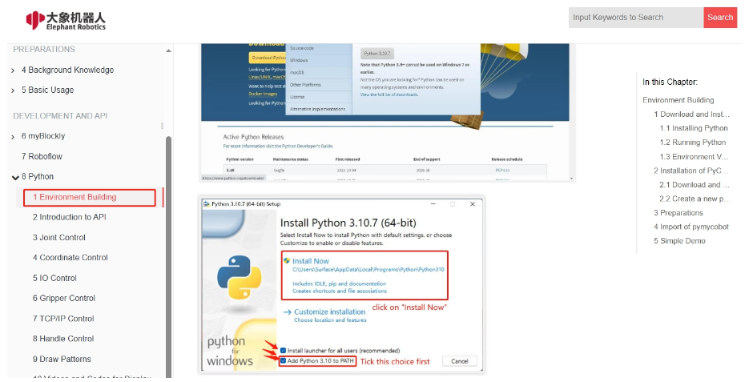
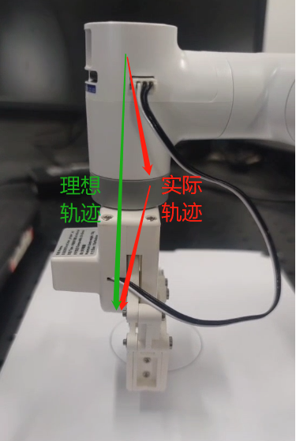
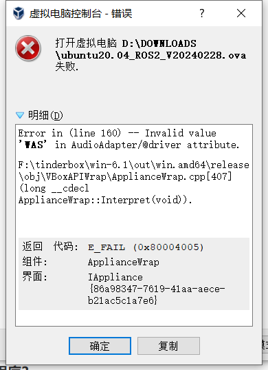
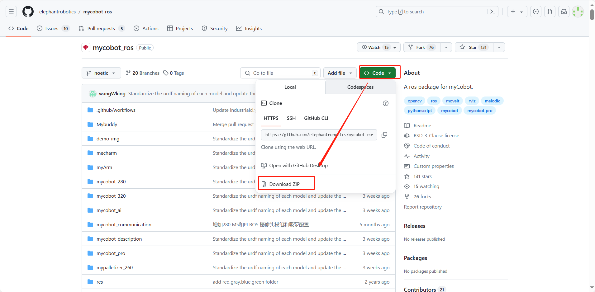
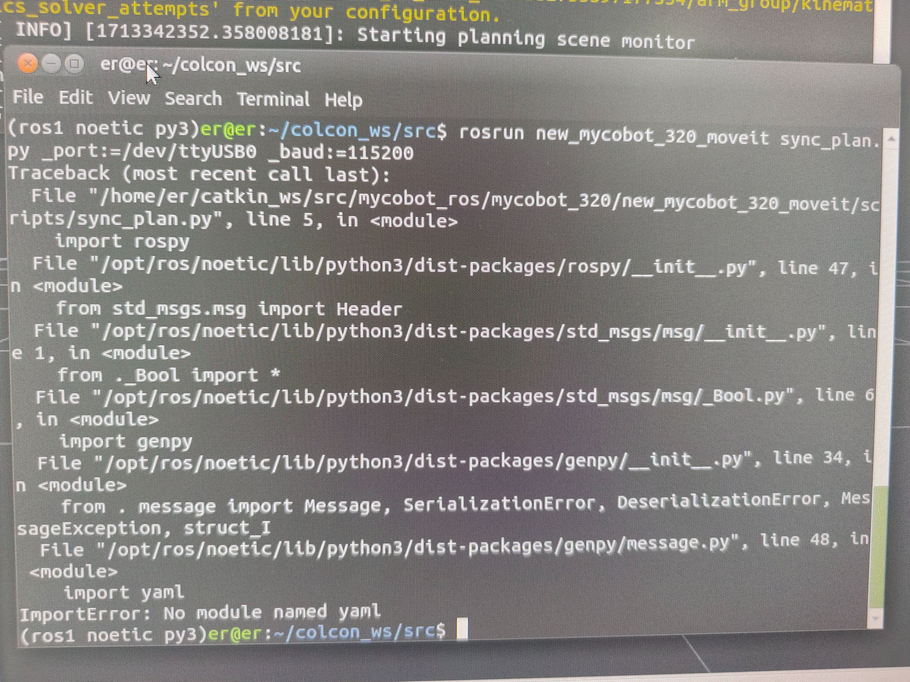
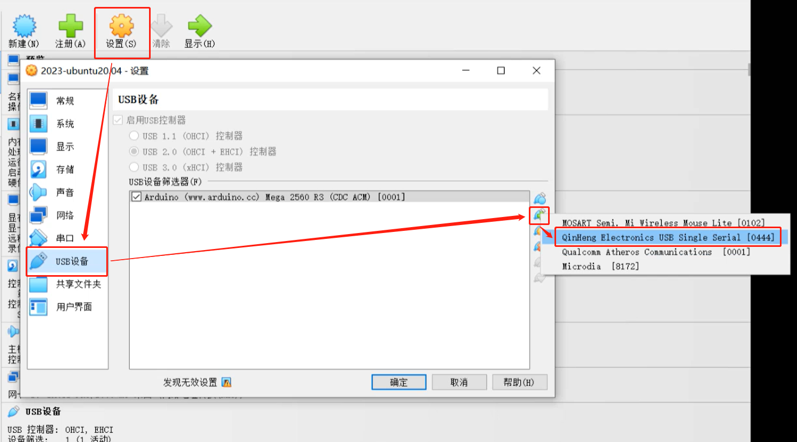

软件问题
1 myStudio相关
Q：myStudio是什么？
- A: 是我们公司自研软件。它是一款给我们公司推出的现有机械臂进行固件烧录或修改的工具。
Q：minirobot、Atom、PICO固件下载异常排查方法是什么？
检查网络连接是否正常，下载固件的过程中是需要连接网络先下载固件的。
检查线路是否已经连接完成，细节如下： 在M5/Arduino系列机器中，烧录Atom固件时，需要使用USB线将末端的Atom接口与电脑的usb口连接；M5系列机器在烧录nimirobot固件时，则使用USB线将M5stack的侧面接口与电脑的usb口连接即可。
选择对应机型的固件，不要选错其他机型的。
下载并安装驱动，如果下载驱动后仍然无法识别，可尝试更换最新的 ch340驱动 ，如果安装了驱动之后仍然无法显示端口号且系统为win11机型，可尝试 Win11系统装CH340驱动方法。
尝试换一个usb线缆、usb端口或者电脑下载试试，避免线缆不具备数据传输功能导致固件下载异常。
卸载mystudio，重新将mystudio安装在非C盘位置试试，例如将mystudio安装在D盘。在mystudio安装在C盘时，对文件权限要求相对苛刻，可能会出现固件无法烧录的情况。
Q：为什么我对ATOM终端烧录固件后设备无法正常运转？
- A：ATOM终端的固件需要使用我们出厂固件，使用中不能更改其他非官方固件，设备如意外烧录其他固件，可以使用“myCobot固件烧录器”选择ATOM终端-选择串口-选择ATOMMAIN固件对ATOM终端进行烧录。
Q：固件中的拖动示教是否可以记录夹爪动作？
- A：暂时无法实现使用拖动示教记录夹爪动作，因为夹爪属于编号7关节，我们的拖动示教只能做到对编号1-6关节的运动记录与播放。
Q：烧录了minirobot固件之后仍然无法拖动示教是为什么？
- A：首先检查一下是否M5Stack-basic固件与atom固件都烧录了，烧录的固件是否对应所要实现的需求以及烧录的是否是最新版本的固件。
- 这里推荐将minirobot固件烧录至v2.1版本，顶部atommain固件烧录至v4.1版本及以上（需要支持mystudio版本在v4.3.1及以上）。
Q：mystudio上识别不到mycobot的串口怎么办？
- A：如果您的电脑设备对连接的机械臂不提示，请先安装串口驱动。
- 另外需要注意的是，树莓派、Arduino和Jetson nano系列机械臂是无法使用数据线连接到笔记本电脑的，需要在内置的系统中使用mystudio进行固件烧录。
Q：拖动示教录制轨迹，能否存到卡里？
- A：目前无法存到内存卡中。并且拖动示教只能一次存一条路径，下一次录制会覆盖之前的动作。
2 RoboFlow相关
Q：无法下载Roboflow软件，Roboflow无法正常控制机器如何处理？
- A：目前Roboflow软件仅支持600/630这两款Pro 专业协作，不再支持mycobot协作型或其他型号机器，mycobot系列机器建议使用的控制方式是myblockly、python及ros，值得一提的是，myblockly是一款与Roboflow图形化界面相似的软件，如果您需要使用可视化图形编程可优先考虑使用myblockly软件。
3 Python相关
Q：运行提示缺少库文件Q:遇到报错信息：ModuleNotFoundError: No module named “pymycobot”，如何处理？
A1：没有安装pymycobot，对应的解决方法是重新安装pymycobot，指令是
pip3 install pymycobot --upgrade --userA2: 在安装python的过程中没有勾选下图的“Add Pythonxx to PATH”，需要卸载python后重新安装python，并将此选项勾选。

A3: 如是M5或AR系列机器，请确认PC中是否有多个python版本，建议卸载PC内所有python版本重新安装一个python3.8以上的版本，注意保持在PC中有且仅有一个python3.8以上版本。如实际使用需要多个python版本，请指定pymycobot使的python版本并在调用pymycobot库时指定python运行的版本。
A4：建议使用3.9版本的pyhton，pyhton12会出现不兼容的情况。
Q：send_coords(coords, speed, mode)中的mode有没有通俗一点的解释？
- A：线性1代表机械臂末端以直线的方式抵达目标位置，如果因为限位、结构等原因无法走直线，那指令就不会完全执行； 线性0表示末端以任意姿态抵达目标位置，由于没有直线的限制，不容易出现指令不执行的现象。
Q：set_fresh_mode(mode) 的插补和刷新模式有什么区别？
- A: 插补0是指起始点和终止点之间规划了很多密集的点位，从而达到控制中间段轨迹的效果。 如何达到程序并行的效果：非插补1就是没有中间段的规划，控制不了轨迹，但是运动会相对平滑。
Q：在仅改变Z轴的情况下，轨迹不是直上直下的，但是最后落点是只改了Z轴，这个正常吗，如何确保中间轨迹也是直线？

- 开插补走直线就能确保轨迹了
set_fresh_mode(0) # 开插补 send_coords(coords, speed, mode=1) # 走直线
注意一定要开插补之后，在send_coords设置的智能规划路线才有用。 插补是指起始点和终止点之间规划了很多密集的点位，从而达到控制中间段轨迹的效果。 非插补就是没有中间段的规划，控制不了轨迹。
Q：get_error_information()的返回值为-1是什么意思？
- A：
get_error_information()的返回值为-1，表示无法正常通讯，你需要检查电源适配器及usb线是否连接，检查LCD屏幕是否停留Atom：ok界面，如果线路未连接成功，且未显示ok均会出现通讯异常的情况，需要重新连接再测试。
Q：用280机器的绘制案例是发现形状轨迹不是很直，能优化吗？
A1：使用签字笔硬质文具等来用这个绘制案例，得到轨迹有偏差这是正常 的。这种偏差主要有2个原因造成，一是由于mycobot使用的是伺服舵机，有一定的精度偏差（如果是使用时间较长的机器，由于关节老化，其关节的偏差会更大），二是在使用硬笔在绘画时跟桌面接触距离比较苛刻，距离过高轨迹容易产生轨迹中断，距离过低会出现笔尖阻力过大卡顿的问题，所以绘制出来的效果并不理想。目前建议使用软质文具进行绘画，例如毛笔毛刷等工具，这对改善绘画效果有一定帮助。
A2：另外，你可以将机械臂的运动模式更改成插补模式，这样运动轨迹会相对平直。
set_fresh_mode(0) # 开插补 send_coords(coords, speed, mode=1) # 走直线注意一定要开插补之后，在send_coords设置的智能规划路线才有用。 插补是指起始点和终止点之间规划了很多密集的点位，从而达到控制中间段轨迹的效果。
Q:识别到的目标位置，末端无法到达，怎么判断这个坐标是否可以到达然后处理？
- A：solve inv kinematics(target coords, current_angles)用这个接口看是否有解就可以了。
solve_inv_kinematics(target_coords, current_angles)
- 功能 : 将坐标转为角度。
- 参数：
- target_coords: list 所有坐标的浮点列表。
- current_angles: list 所有角度的浮点列表，机械臂当前角度
- 返回值: list 所有角度的浮点列表。
4 ROS相关
Q：有没有配置好环境的虚拟机镜像？
A：我们有提供一个配置好ROS1及ROS2环境且内置ROS源码的虚拟机环境，用户可以通过下面这个链接下载，并将虚拟机文件导入VirtualBox，省去自己配置环境的麻烦，当测试ROS案例时建议使用我们已经配置好的虚拟机环境进行验证，避免由于环境配置的原因导致的一些案例运行报错 请参考虚拟机文件导入虚拟机软件的操作步骤视频：https://drive.google.com/file/d/1KeYk_CUgDE46rVn7zbd0EhraIbgt3qZt/view?usp=sharing
Q：导入ROS2虚拟机文件的时候报错怎么处理？

- A: 这是因为虚拟机软件Oracle VM VirtualBox版本过低导致的，需更新虚拟机软件版本。
Q：如何重新下载ROS源码包？
A：使用指令拉取：
git clone https://github.com/elephantrobotics/mycobot_ros.git或着手动下载，下载方法进入到ROS源码包地址按照下图进行操作，源码包地址：https://github.com/elephantrobotics/mycobot_ros

Q: 运行ROS moveit案例发现报错ImprotError：No module named yaml咋办？

- A：在这个脚本开头第一行，把Python解释器改为python3
Q：运行虚拟机找不到串口怎么处理？
A:使用USB线将M5机械臂与PC连接，打开虚拟机设置→USB设备→添加USB设备→选择串口号QinHeng xxxxx，这个就是机器的串口设备。 如果没有这个设备号，可以通过重新拔插设备获取对应的USB设备号，拔插有串口变化的即对应的机器串口设备号

Q:使用基于mujoco的环境进行仿真训练，因此需要机器人的xml文件
- A:目前GitHub上只有280JN的xml文件：280JN
- 提供给客户如何将dae、urdf类型的文件转换成xml文件的方法给客户，让客户用meshlab自行转换。
Q：终端切换到~/catkin_ws/src中使用git安装并更新mycobot_ros时，出现目标路径"mycobot_ros"已经存在，原因是什么？
- A：说明
~/catkin_ws/src中已经存在一个mycobot_ros程序包，需要提前将其删掉，再重新执行git操作即可。
Q：rosrun运行时，终端报错显示counld not open port /dev/ttyUSB0：Permission: '/dev/ttyUSB0'，是为什么？
- A：串口权限不够，终端输入
sudo chmod 777 /dev/ttyUSB0赋予权限。
Q：rosrun运行时，终端提示Unable to register with master node [http://localhost:11311]: master may not be running yet. Will keep trying的原因是？
- A：运行ros程序前，需开启ros节点，终端输入
roscore。
Q：rosrun运行时，终端报错显示counld not open port /dev/ttyUSB0：No such file or directory: '/dev/ttyUSB1'，是为什么？
- A：串口有误。需确认当前机械臂的实际串口。可通过
ls /dev/tty*查看。
Q：在Ubuntu18.04中进行catkin_make构建代码失败,终端提示Project 'cv_bridge' specifies '/usr/include/opencv' as an include dir, which is not found.等报错信息
- A：配置文件中的opencv路径与系统实际路径不相符。需使用sudo修改配置文件（路径为
/opt/ros/melodic/share/cv_bridge/cmake/cv_bridgeConfig.cmake），系统实际opencv路径位于/usr/include/路径下。
Q：刚克隆下来的mycobot_ros程序包，然后直接运行rosrun程序，出现package 'mycobot_280' not found的错误或者找不到该文件之类的错误？
- A：刚克隆下来的mycobot_ros需要构建代码进行ros环境编译。终端输入
cd ~/catkin_ws/
catkin_make
source devel/setup.bash
Q：编译完成后，新开终端运行launch指令时，为什么会出现下面的错误？

- A1：系统没有添加ros环境变量，所以每次开启新终端都要source：
cd ~/catkin_ws/
source devel/setup.bash
- A2：系统添加ros环境变量，每次开启新终端后无需执行source：
# noetic为Ubuntu20.04系统
echo "source /opt/ros/noetic/setup.bash" >> ~/.bashrc
source ~/.bashrc
- A3：可能是指令中的文件名与实际中mycobot_ros包里面的文件名不一致，请仔细检查指令是否有误。
5 C++相关
Q：找不到各种dll文件怎么处理？
- A1：如果myCobotCpp.dll缺失，将之前放到lib目录下的myCobotCpp.dl放到mycobotcppexample.exe所在目录下.
- A2: 如果报缺少QT5Core.dll，打开qt command (菜单栏搜索QT) ，选择msvc2017 64-bit，执行windeployqt--release myCobotCppExample.exe所在目录(如: windeployqt --release D:lvs2019myCobotCpploutlbuildlx64-Releaselbin) 此处执行命令后如果报找不到vs安装路径，请检查vs环境变量的设置.
以上步骤执行后，如果报缺少qt5serialport.dll文件，将gt安装目录处的此文件(路径如: D:lgt5.12.1015.12.10msvc2017 64bin)，拷贝到myCobotCppExample.exe所在目录
Q：生成myCobotCppExample.exe可执行文件，这个有可能是什么问题？
选择下图中的启动